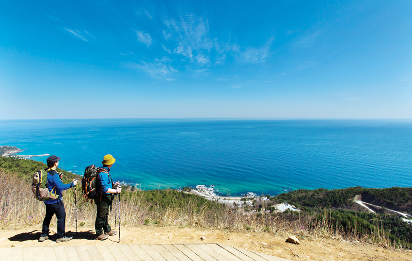

|
추석 때 대관령에서 강릉까지 걸어보려고 합니다.
동서울 터미널에서 횡계터미널, 횡계터미널에서 대관령으로 가서
대관령부터 경포솔향온천까지 걸어간 뒤 하루 자고 경포대 구경 후 강릉터미널 통해 돌아오려는데요,
대관령에서 경포솔향온천까지 걸어내려갈 수 있는 경로가 궁금합니다.
자전거 여행으로 한번 국도타고 내려 갔었는데 혹시 바우길 이용해서도 내려갈 수 있는지 궁금해서요! 답변 기다리겠습니다.

|
|
설마 완주해야 준대요?
아리바우길은
아리랑의 정선과 올림픽고장 평창 그리고 강릉에 원래부터 지정되어 있던 바우길을 잇는
어마무시하게 긴 구간입니다. 131.7Km 물론 여러개의 구간으로 쪼개져 있습니다.
1개구간만 걸어도 기본 3~4시간 정도는 걸립니다.
일단 강릉 송양초등학교로 가서 오죽헌--선교장--경포대정자--경포해변까지 걷는
17.7Km의 9 번 코스(구간)으로 하죠. 개통식은 내일(14일) 9시 30분에 경포호수쪽에서 한답니다.
|
|
홈페이지 로그인 시에 ID와 Password 를 입력하고 로그인 버튼을 누르면
다시 로그인 하기전의 모습으로 돌아가버립니다.
그 후에 검색창에 검색어를 입력하고 검색을 하면 우측 상단에는 또 로그인이 되어있어
저의 닉네임과 프로필 사진, 알림표시, 메일 알림 등이 표시됩니다.
네이버에 검색하여 하라는대로 다 해보았지만 계속 똑같은 문제만 반복되네요.
제 컴퓨터에 이상이 있을까 하고 V3백신을 통해 정밀 검사도 해보았지만 바이러스는 검출되지 않았구요.
네이버 홈페이지의 일시적인 오류인지 무엇 때문에 그러는건지 자꾸만 이런 오류가 발생이 되니..
결국 참다 못해 이렇게 질문을 올리고요 답변 부탁드립니다.
|
|
여자혼자 강원도 1박 2일로 여행가려고 해요^^
혼자 여행을 가본 적이 없어서 루트를 어떻게 짤 지 모르겠네요..
강원도에 명소가 어디에 있는지도 잘 모르겠고... 지리엔 정말 약해서요ㅠㅠ
바다도 갔으면 좋겠고.. 또 그 외 강릉으로 1박 2일 괜찮은 루트 있을까요?
잠은 게스트하우스 이용할 생각이에요^^
|